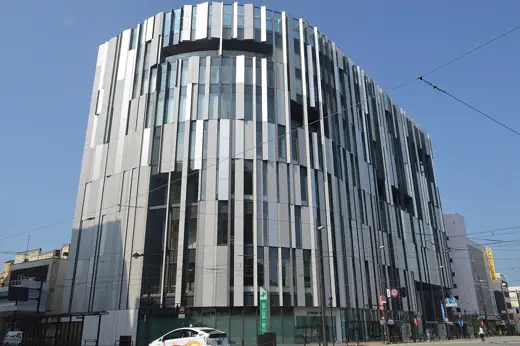
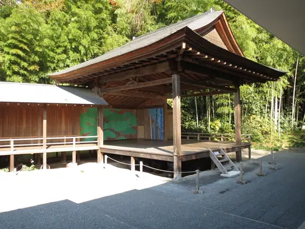
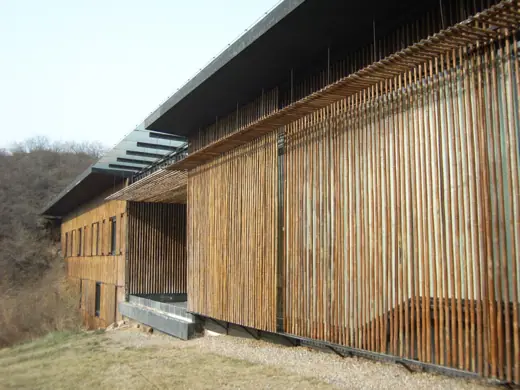
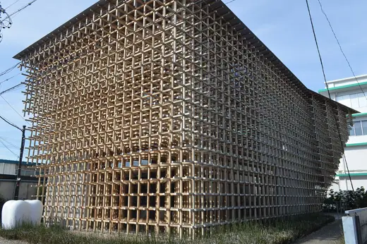

Kengo Kuma buildings 26
Sort
 Kiro-san Observatory1994 · Imabari
Kiro-san Observatory1994 · Imabari Nakagawa-machi Bato Hiroshige Museum2000 · Nakagawa
Nakagawa-machi Bato Hiroshige Museum2000 · Nakagawa Nagasaki Prefectural Art Museum2005 · Nagasaki
Nagasaki Prefectural Art Museum2005 · Nagasaki Suntory Museum of Art2007 · Tokyo
Suntory Museum of Art2007 · Tokyo Starbucks Coffee, Dazaifu Tenmangu Omotesando2011 · Dazaifu
Starbucks Coffee, Dazaifu Tenmangu Omotesando2011 · Dazaifu Asakusa Culture Tourist Information Center2012 · Tokyo
Asakusa Culture Tourist Information Center2012 · Tokyo Kabuki-za (2013)2013 · Tokyo
Kabuki-za (2013)2013 · Tokyo
Toyama Kirari2015 · Toyama Japan National Stadium2019 · Tokyo
Japan National Stadium2019 · Tokyo Kadokawa Culture Museum2020 · Tokorozawa
Kadokawa Culture Museum2020 · Tokorozawa Waseda International House of Literature (Haruki Murakami Library)2021 · Tokyo
Waseda International House of Literature (Haruki Murakami Library)2021 · Tokyo Saint-Denis–Pleyel station2024 · Saint-Denis
Saint-Denis–Pleyel station2024 · Saint-Denis
Mori Butai1996 · Tome Stone Museum (Stone Plaza)2000 · Nasu
Stone Museum (Stone Plaza)2000 · Nasu
Great (Bamboo) Wall House2002 · Beijing Nezu Museum2009 · Tokyo
Nezu Museum2009 · Tokyo
GC Prostho Museum Research Center2010 · Kasugai Aore Nagaoka City Hall2012 · Nagaoka
Aore Nagaoka City Hall2012 · Nagaoka Cité des Arts2013 · Besançon
Cité des Arts2013 · Besançon FRAC Provence-Alpes-Côte d'Azur2013 · Marseille
FRAC Provence-Alpes-Côte d'Azur2013 · Marseille SunnyHills at Minami-Aoyama2013 · Tokyo
SunnyHills at Minami-Aoyama2013 · Tokyo V&A Dundee2018 · Dundee
V&A Dundee2018 · Dundee Odunpazarı Modern Museum2019 · Eskişehir
Odunpazarı Modern Museum2019 · Eskişehir Takanawa Gateway Station2020 · Tokyo
Takanawa Gateway Station2020 · Tokyo British Antique Museum Kamakura2022 · Kamakura
British Antique Museum Kamakura2022 · Kamakura Aichi International Arena (IG Arena)2025 · Nagoya
Aichi International Arena (IG Arena)2025 · Nagoya